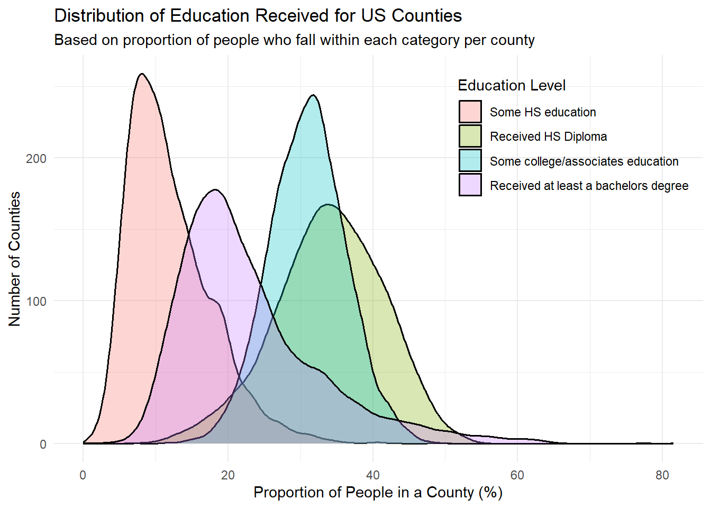
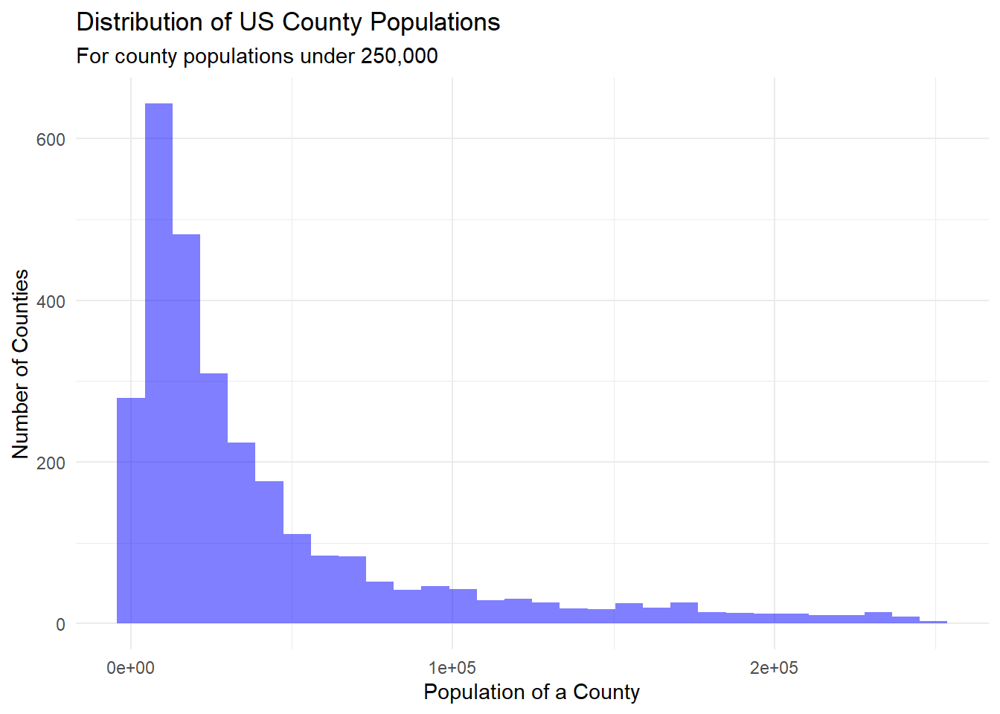
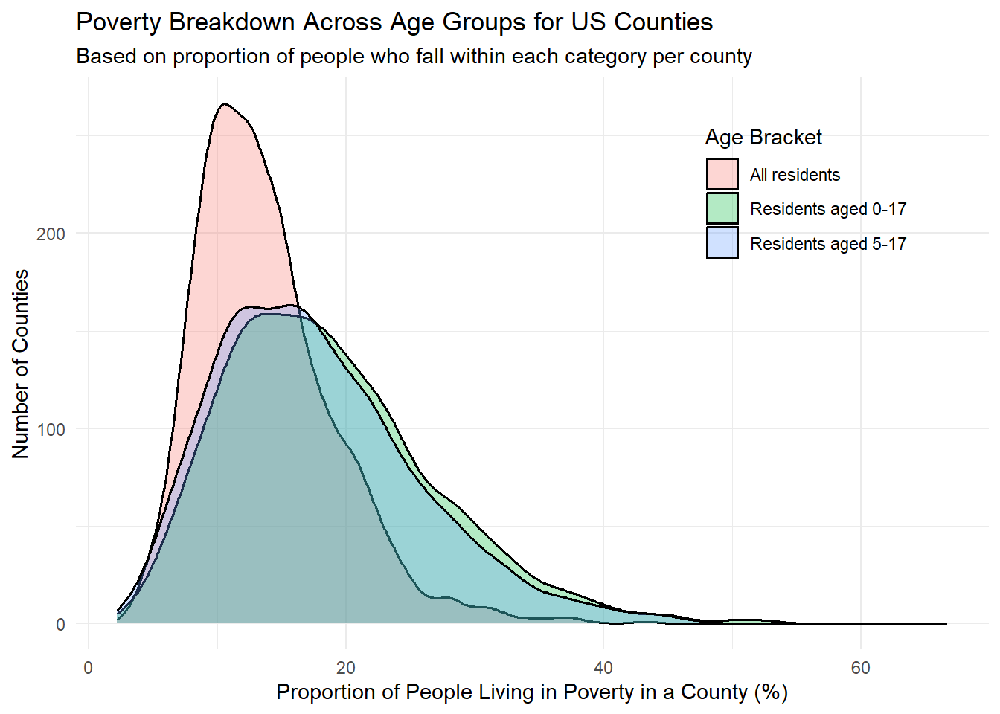

Code
library(tidyverse)
library(readxl)
library(here)
knitr::opts_chunk$set(echo = TRUE, warning=FALSE, message=FALSE)Linus Jen
June 12, 2023
For this homework assignment (and final project), I will be looking at US state and county level data, specifically data that relates back to population, education level, and poverty estimates. All data was pulled from the US Department of Agriculture. This data was collected via the US census I also only care about the 2020 year or data that relates to the 2020 year (as the datasets are large and span multiple years, while the poverty dataset only goes up to 2020), and this will be one filter applied to our dataset. All datasets include both the individual county data and the state totals for their given metric. The Federal Information Processing Standard, or FIPS for short, is a five digit number representing a unique ID for states and counties, and is used to join our data together. To remove state totals, simply exclude observations where the FIPS value ends in “000”, such as “01000”, “02000”, etc. We also are only interested in US counties, and remove all FIPS codes greater than or equal to 72000.
# Pull in data
edu <- read_excel(here("posts", "_data", "Linus_US_Education.xlsx"), skip=3) %>%
select(matches("21|FIPS")) %>%
rename(FIPS=1, no_HS=2, HS_only=3, some_college=4, bach_plus=5, perc_no_HS=6, perc_HS_only=7, perc_some_college=8, perc_bach_plus=9) %>%
filter(FIPS < 72000)
# View structure of dataset
glimpse(edu)Rows: 3,206
Columns: 9
$ FIPS <chr> "00000", "01000", "01001", "01003", "01005", "01007"…
$ no_HS <dbl> 25050356, 430047, 4126, 14555, 4378, 3125, 6650, 154…
$ HS_only <dbl> 59636386, 1041209, 12977, 44342, 6600, 7052, 14284, …
$ some_college <dbl> 64656741, 1032122, 11367, 50518, 5010, 3967, 13673, …
$ bach_plus <dbl> 75808834, 910425, 11144, 52562, 2007, 1913, 6061, 80…
$ perc_no_HS <dbl> 11.125960, 12.597300, 10.415510, 8.985844, 24.328980…
$ perc_HS_only <dbl> 26.48713, 30.49997, 32.75862, 27.37549, 36.67685, 43…
$ perc_some_college <dbl> 28.71689, 30.23379, 28.69440, 31.18838, 27.84107, 24…
$ perc_bach_plus <dbl> 33.67002, 26.66894, 28.13147, 32.45029, 11.15310, 11…# Quick graph to show proportions
edu %>%
select(matches("FIPS|perc")) %>%
filter(!str_detect(FIPS, "0{3}$")) %>% # Remove states
pivot_longer(cols=contains("perc"), names_to="perc_type", values_to="percent") %>%
mutate(perc_type = factor(perc_type, levels=c("perc_no_HS", "perc_HS_only", "perc_some_college", "perc_bach_plus"))) %>%
ggplot(aes(percent, fill=perc_type)) +
geom_density(aes(y=..count..), size=0.7, alpha=0.3) +
theme_minimal() +
theme(legend.position=c(0.8, 0.8)) +
labs(title="Distribution of Education Received for US Counties",
subtitle="Based on proportion of people who fall within each category per county",
x="Proportion of People in a County (%)",
y="Number of Counties", fill="Education Level") +
scale_fill_discrete(labels=c("Some HS education", "Received HS Diploma", "Some college/associates education", "Received at least a bachelors degree"))
# Made tidy
edu_totals <- edu %>%
select(c("FIPS", contains("perc"))) %>%
pivot_longer(cols=contains("perc"),
names_to="edu_level",
values_to="edu_perc") %>%
mutate(edu_level=str_remove(edu_level, "perc_"))
edu_percs <- edu %>%
select(c("FIPS", !contains("perc"))) %>%
pivot_longer(cols=no_HS:bach_plus,
names_to="edu_level",
values_to="edu_total")
edu_tidy = edu_percs %>% inner_join(edu_totals,
by=c("FIPS", "edu_level")) %>%
mutate(edu_level=factor(edu_level, levels=c("no_HS", "HS_only", "some_college", "bach_plus")))
# View tidy data
head(edu_tidy)The educational dataset above contains the education levels (less than a high school diploma, received only a high school diploma, some bachelor or associates degree, and received a bachelors or more) of residents in each US state and county, returning data as both the total number of people who reside in that location and meet the criteria, or the percentage or people who fall into that category, compared to the rest of the county. The graph above shows the distribution of people who fall into each education category based on the county they live in. The graph shows that education levels are quite different across counties, as each category has quite distinct peaks and distributions. People who have only received a high school diploma or some higher education make up the majority of the all counties’ population. Getting a college degree or higher is still somewhat rare, as we see that the peak is around 20% of a county’s population. Lastly, there’s clearly some room for improvement in terms of improving education for all, as ~8% of people in counties don’t have their high school diploma.
We converted the data into a “tidy” format so that each row represents a county and the education level, with values for the total number of people who fall into that group, and the percent of all people in that county who achieved that education level.
Rows: 3,201
Columns: 2
$ FIPS <chr> "00000", "01000", "01001", "01003", "01005", "01007", "01009"…
$ pop_2020 <dbl> 331449281, 5024279, 58805, 231767, 25223, 22293, 59134, 10357… Min. 1st Qu. Median Mean 3rd Qu. Max. NA's
64 10974 26582 311220 74120 331449281 6 # Graph data
pop %>%
filter(!str_detect(FIPS, "0{3}$") & pop_2020 < 250000) %>%
ggplot(aes(pop_2020)) +
geom_histogram(fill="blue", alpha=0.5) +
theme_minimal() +
labs(title="Distribution of US County Populations",
x="Population of a County",
y="Number of Counties",
subtitle="For county populations under 250,000")
This second dataset gives insight to the population sizes of all US counties, as well as the state population. The histogram above shows the population distribution, and we see that it’s clearly skewed right. The data was filtered in the graph to only keep counties with populations under 250K because there were many outliers that made the graph less visually appealing. It would be interesting to graph this information on a map to check for population centers across the US, or pair them up with other variables to check for relationships. The data is mostly tidy and clean already, but there are some counties without any values. After checking the .xlsx file, we find that this is because these counties tend to be very small (previous years show that they have populations <8K). For now, we will keep this data to reflect that data is missing.
pov <- read_excel(here("posts", "_data", "Linus_US_PovertyEstimates.xlsx"), sheet="Poverty Data 2020", skip=4) %>%
select(c(matches("FIPS|POV|MED"), "Stabr", "Area_name")) %>%
rename(FIPS=1, pov_all=2, perc_pov_all=3, pov_0_17=4, perc_pov_0_17=5, pov_5_17=6, perc_pov_5_17=7, med_inc=8, pov_0_4=9, perc_pov_0_4=10, state_acr=11, area_name=12) %>%
filter(FIPS < 72000)
# Create another column with all people living in poverty that's 18+
pov <- pov %>%
mutate(pov_18_plus=pov_all - pov_0_17)
# View data
glimpse(pov)Rows: 3,195
Columns: 13
$ FIPS <chr> "00000", "01000", "01001", "01003", "01005", "01007", "0…
$ pov_all <dbl> 38371394, 714568, 6242, 20189, 5548, 3549, 7525, 2552, 3…
$ perc_pov_all <dbl> 11.9, 14.9, 11.2, 8.9, 25.5, 17.8, 13.1, 30.8, 20.6, 14.…
$ pov_0_17 <dbl> 11204423, 222934, 1912, 5907, 1857, 941, 2456, 790, 1306…
$ perc_pov_0_17 <dbl> 15.7, 20.9, 14.9, 12.4, 37.5, 21.9, 18.9, 38.7, 30.8, 16…
$ pov_5_17 <dbl> 7798566, 152810, 1378, 4192, 1303, 681, 1515, 547, 934, …
$ perc_pov_5_17 <dbl> 14.9, 19.7, 14.5, 11.8, 35.8, 22.1, 15.8, 37.0, 29.8, 16…
$ med_inc <dbl> 67340, 53958, 67565, 71135, 38866, 50907, 55203, 33124, …
$ pov_0_4 <dbl> 3146325, 66169, NA, NA, NA, NA, NA, NA, NA, NA, NA, NA, …
$ perc_pov_0_4 <dbl> 16.8, 23.3, NA, NA, NA, NA, NA, NA, NA, NA, NA, NA, NA, …
$ state_acr <chr> "US", "AL", "AL", "AL", "AL", "AL", "AL", "AL", "AL", "A…
$ area_name <chr> "United States", "Alabama", "Autauga County", "Baldwin C…
$ pov_18_plus <dbl> 27166971, 491634, 4330, 14282, 3691, 2608, 5069, 1762, 2…# Graph data
pov %>%
select(matches("FIPS|perc")) %>%
filter(!str_detect(FIPS, "0{3}$")) %>% # Remove states
pivot_longer(cols=contains("perc"), names_to="perc_type", values_to="percent") %>%
mutate(perc_type = factor(perc_type, levels=c("perc_pov_all", "perc_pov_0_17", "perc_pov_5_17", "perc_pov_0_4"))) %>%
ggplot(aes(percent, fill=perc_type)) +
geom_density(aes(y=..count..), size=0.7, alpha=0.3) +
theme_minimal() +
theme(legend.position=c(0.8, 0.8)) +
labs(title="Poverty Breakdown Across Age Groups for US Counties",
subtitle="Based on proportion of people who fall within each category per county",
x="Proportion of People Living in Poverty in a County (%)",
y="Number of Counties", fill="Age Bracket") +
scale_fill_discrete(labels=c("All residents", "Residents aged 0-17", "Residents aged 5-17", "Residents aged 0-4"))
# Tidy data
pov_percs <- pov %>%
select(!contains("perc")) %>%
pivot_longer(cols=pov_all:pov_0_4,
names_to="age_group",
values_to="pov_total")
pov_totals <- pov %>%
select(c("FIPS", contains("perc"))) %>%
pivot_longer(cols=perc_pov_all:perc_pov_0_4,
names_to="age_group",
values_to="pov_perc") %>%
mutate(age_group=str_remove(age_group, "perc_"))
pov_tidy <- pov_percs %>% inner_join(pov_totals, by=c("FIPS", "age_group")) %>%
mutate(age_group=factor(age_group, levels=c("pov_all", "pov_0_17", "pov_5_17", "pov_0_4", "med_")))
# Clean env
rm(pov_percs)
rm(pov_totals)This section covers poverty-related features for US county, including the number of people living in poverty and the proportion of people living in poverty. Groups are broken up by age groups (total number of people living in poverty, number of people aged 0-17 living in poverty, number of people aged 5-17 living in poverty, number of people aged 0-4 living in poverty, and the associated percentages for each category), and represent a percentage compared to the entire population of people who fit into that age group residing in that county. One thing to note is that the data for the category of people living in poverty aged between 0-4 years old only exists at the state level, but not at the county level, which is why we don’t see that group in the graph above (and is also evident by the high levels of missing data in the associated columns). It’s interesting that the distributions for minors (<18 years of age) are about the same and quite larger than the distribution of all residents living in poverty. This tells us that a large proportion of minors are living in poverty, and due to this at-risk nature, require more support in educational and welfare systems that help these youngsters.
Although this dataset covers all counties and states in the US, I would rather focus on specific regions and how these variables might relate to one another. For example, I might want to look at low education levels in California (where I’m from) or Massachusetts, and see how these compare with population centers and poverty rates. Here are potential research questions that I might dive deeper into:
---
title: "Homework 2: US State and County Data on Population, Education, and Poverty"
author: "Linus Jen"
description: "Reading in Data"
date: "6/12/2023"
format:
html:
toc: true
code-fold: true
code-copy: true
code-tools: true
df-print: paged
categories:
- hw2
- Linus Jen
---
```{r setup}
#| label: setup
#| warning: false
#| message: false
library(tidyverse)
library(readxl)
library(here)
knitr::opts_chunk$set(echo = TRUE, warning=FALSE, message=FALSE)
```
# Project Overview
For this homework assignment (and final project), I will be looking at US state and county level data, specifically data that relates back to population, education level, and poverty estimates. All data was pulled from the [US Department of Agriculture](https://www.ers.usda.gov/data-products/county-level-data-sets/). This data was collected via the US census I also only care about the 2020 year or data that relates to the 2020 year (as the datasets are large and span multiple years, while the poverty dataset only goes up to 2020), and this will be one filter applied to our dataset. All datasets include both the individual county data and the state totals for their given metric. The Federal Information Processing Standard, or FIPS for short, is a five digit number representing a unique ID for states and counties, and is used to join our data together. To remove state totals, simply exclude observations where the FIPS value ends in "000", such as "01000", "02000", etc. We also are only interested in US counties, and remove all FIPS codes greater than or equal to 72000.
## Data Ingestion and Combining
### Education
```{r}
# Pull in data
edu <- read_excel(here("posts", "_data", "Linus_US_Education.xlsx"), skip=3) %>%
select(matches("21|FIPS")) %>%
rename(FIPS=1, no_HS=2, HS_only=3, some_college=4, bach_plus=5, perc_no_HS=6, perc_HS_only=7, perc_some_college=8, perc_bach_plus=9) %>%
filter(FIPS < 72000)
# View structure of dataset
glimpse(edu)
# Quick graph to show proportions
edu %>%
select(matches("FIPS|perc")) %>%
filter(!str_detect(FIPS, "0{3}$")) %>% # Remove states
pivot_longer(cols=contains("perc"), names_to="perc_type", values_to="percent") %>%
mutate(perc_type = factor(perc_type, levels=c("perc_no_HS", "perc_HS_only", "perc_some_college", "perc_bach_plus"))) %>%
ggplot(aes(percent, fill=perc_type)) +
geom_density(aes(y=..count..), size=0.7, alpha=0.3) +
theme_minimal() +
theme(legend.position=c(0.8, 0.8)) +
labs(title="Distribution of Education Received for US Counties",
subtitle="Based on proportion of people who fall within each category per county",
x="Proportion of People in a County (%)",
y="Number of Counties", fill="Education Level") +
scale_fill_discrete(labels=c("Some HS education", "Received HS Diploma", "Some college/associates education", "Received at least a bachelors degree"))
# Made tidy
edu_totals <- edu %>%
select(c("FIPS", contains("perc"))) %>%
pivot_longer(cols=contains("perc"),
names_to="edu_level",
values_to="edu_perc") %>%
mutate(edu_level=str_remove(edu_level, "perc_"))
edu_percs <- edu %>%
select(c("FIPS", !contains("perc"))) %>%
pivot_longer(cols=no_HS:bach_plus,
names_to="edu_level",
values_to="edu_total")
edu_tidy = edu_percs %>% inner_join(edu_totals,
by=c("FIPS", "edu_level")) %>%
mutate(edu_level=factor(edu_level, levels=c("no_HS", "HS_only", "some_college", "bach_plus")))
# View tidy data
head(edu_tidy)
# Keep env clean
rm(edu_percs)
rm(edu_totals)
```
The educational dataset above contains the education levels (less than a high school diploma, received only a high school diploma, some bachelor or associates degree, and received a bachelors or more) of residents in each US state and county, returning data as both the total number of people who reside in that location and meet the criteria, or the percentage or people who fall into that category, compared to the rest of the county. The graph above shows the distribution of people who fall into each education category based on the county they live in. The graph shows that education levels are quite different across counties, as each category has quite distinct peaks and distributions. People who have only received a high school diploma or some higher education make up the majority of the all counties' population. Getting a college degree or higher is still somewhat rare, as we see that the peak is around 20% of a county's population. Lastly, there's clearly some room for improvement in terms of improving education for all, as ~8% of people in counties don't have their high school diploma.
We converted the data into a "tidy" format so that each row represents a county and the education level, with values for the total number of people who fall into that group, and the percent of all people in that county who achieved that education level.
### Population
```{r}
pop <- read_excel(here("posts", "_data", "Linus_US_PopulationEstimates.xlsx"), skip=4) %>%
select(matches("FIPS|2020")) %>%
rename(FIPS=1, pop_2020=2) %>%
filter(FIPS < 72000)
# View data
glimpse(pop)
summary(pop$pop_2020)
# Missing data
pop %>% summarise(across(everything(), ~sum(is.na(.))))
pop %>% filter(is.na(pop_2020))
# Graph data
pop %>%
filter(!str_detect(FIPS, "0{3}$") & pop_2020 < 250000) %>%
ggplot(aes(pop_2020)) +
geom_histogram(fill="blue", alpha=0.5) +
theme_minimal() +
labs(title="Distribution of US County Populations",
x="Population of a County",
y="Number of Counties",
subtitle="For county populations under 250,000")
```
This second dataset gives insight to the population sizes of all US counties, as well as the state population. The histogram above shows the population distribution, and we see that it's clearly skewed right. The data was filtered in the graph to only keep counties with populations under 250K because there were many outliers that made the graph less visually appealing. It would be interesting to graph this information on a map to check for population centers across the US, or pair them up with other variables to check for relationships. The data is mostly tidy and clean already, but there are some counties without any values. After checking the `.xlsx` file, we find that this is because these counties tend to be very small (previous years show that they have populations <8K). For now, we will keep this data to reflect that data is missing.
### Poverty
```{r}
pov <- read_excel(here("posts", "_data", "Linus_US_PovertyEstimates.xlsx"), sheet="Poverty Data 2020", skip=4) %>%
select(c(matches("FIPS|POV|MED"), "Stabr", "Area_name")) %>%
rename(FIPS=1, pov_all=2, perc_pov_all=3, pov_0_17=4, perc_pov_0_17=5, pov_5_17=6, perc_pov_5_17=7, med_inc=8, pov_0_4=9, perc_pov_0_4=10, state_acr=11, area_name=12) %>%
filter(FIPS < 72000)
# Create another column with all people living in poverty that's 18+
pov <- pov %>%
mutate(pov_18_plus=pov_all - pov_0_17)
# View data
glimpse(pov)
pov %>% summarise(across(everything(), ~sum(is.na(.))))
# Graph data
pov %>%
select(matches("FIPS|perc")) %>%
filter(!str_detect(FIPS, "0{3}$")) %>% # Remove states
pivot_longer(cols=contains("perc"), names_to="perc_type", values_to="percent") %>%
mutate(perc_type = factor(perc_type, levels=c("perc_pov_all", "perc_pov_0_17", "perc_pov_5_17", "perc_pov_0_4"))) %>%
ggplot(aes(percent, fill=perc_type)) +
geom_density(aes(y=..count..), size=0.7, alpha=0.3) +
theme_minimal() +
theme(legend.position=c(0.8, 0.8)) +
labs(title="Poverty Breakdown Across Age Groups for US Counties",
subtitle="Based on proportion of people who fall within each category per county",
x="Proportion of People Living in Poverty in a County (%)",
y="Number of Counties", fill="Age Bracket") +
scale_fill_discrete(labels=c("All residents", "Residents aged 0-17", "Residents aged 5-17", "Residents aged 0-4"))
# Tidy data
pov_percs <- pov %>%
select(!contains("perc")) %>%
pivot_longer(cols=pov_all:pov_0_4,
names_to="age_group",
values_to="pov_total")
pov_totals <- pov %>%
select(c("FIPS", contains("perc"))) %>%
pivot_longer(cols=perc_pov_all:perc_pov_0_4,
names_to="age_group",
values_to="pov_perc") %>%
mutate(age_group=str_remove(age_group, "perc_"))
pov_tidy <- pov_percs %>% inner_join(pov_totals, by=c("FIPS", "age_group")) %>%
mutate(age_group=factor(age_group, levels=c("pov_all", "pov_0_17", "pov_5_17", "pov_0_4", "med_")))
# Clean env
rm(pov_percs)
rm(pov_totals)
```
This section covers poverty-related features for US county, including the number of people living in poverty and the proportion of people living in poverty. Groups are broken up by age groups (total number of people living in poverty, number of people aged 0-17 living in poverty, number of people aged 5-17 living in poverty, number of people aged 0-4 living in poverty, and the associated percentages for each category), and represent a percentage compared to the entire population of people who fit into that age group residing in that county. One thing to note is that the data for the category of people living in poverty aged between 0-4 years old only exists at the state level, but not at the county level, which is why we don't see that group in the graph above (and is also evident by the high levels of missing data in the associated columns). It's interesting that the distributions for minors (<18 years of age) are about the same and quite larger than the distribution of all residents living in poverty. This tells us that a large proportion of minors are living in poverty, and due to this at-risk nature, require more support in educational and welfare systems that help these youngsters.
# Research Questions
Although this dataset covers all counties and states in the US, I would rather focus on specific regions and how these variables might relate to one another. For example, I might want to look at low education levels in California (where I'm from) or Massachusetts, and see how these compare with population centers and poverty rates. Here are potential research questions that I might dive deeper into:
1. Do large populations (in California or any other state) tend to have a higher percentage of people with better educations or lower levels of poverty?
2. Do coastal states show any different levels of poverty or education?
3. Do conservative (states or counties, need to get another dataset to get political leaning) or liberal states show different trends with education or poverty for residents?